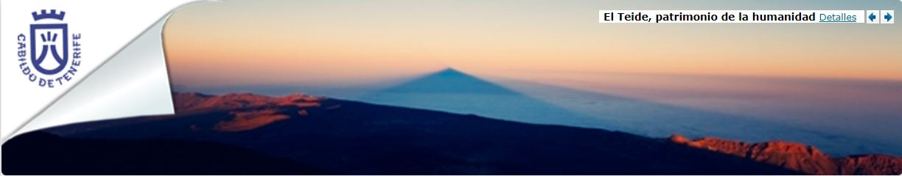

MF0950: Construcción de páginas web
UF1302: Creación de páginas web con el lenguaje de marcas
ACTIVIDAD EVALUABLE UF 1303-E2
Datos de contacto:
© Loreley Gurruchaga Hernández, 78854463K– loreley.inpsiweb@gmail.com

> Vivir en Tenerife
Información para el ciudadano
> Descubre Tenerife
Visitar la Isla
> Empresas
Empresas, autónomos y emprendedores
Plan Insular de Modernización
El Cabildo de Tenerife impulsa con decisión su modernización real, racionalización y transformación digital
Conoce el proceso.
Noticias
- Tensalus y Milenio presentan en el Cabildo las medallas obtenidas en los campeonatos de España y del Mundo de natación adaptada
- El Cabildo destina 9,6 millones de euros a becas para jóvenes estudiantes
- El Cabildo y la Comisión Española de Ayuda al Refugiado colaborarán en atender las necesidades de los desplazados de Ucrania
- El Cabildo mantendrá los precios del transporte público pese a la subida de los costes
Oficina de Asistencia Integral a los Municipios
Conoce los ámbitos donde el Cabildo de Tenerife presta asistencia jurídica, económica y técnica a los municipios de la Isla
 Más información sobre Oficina de Asistencia Integral a los Municipios
Más información sobre Oficina de Asistencia Integral a los Municipios